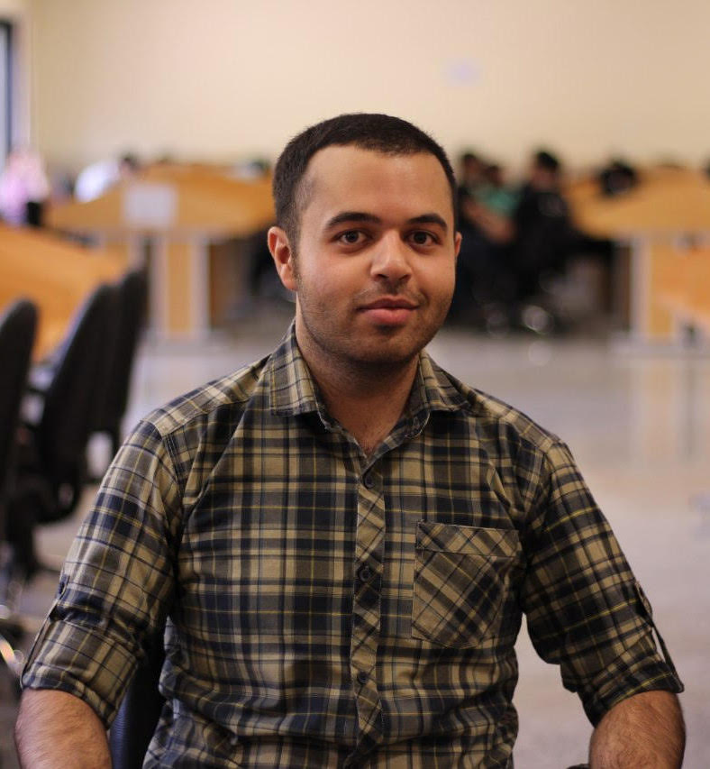

Welcome
My name is Ali Pourmand and I am currently a PhD student at Macquarie University in Sydney, Australia. Before that I finished my master's degree at the University of Alberta in Edmonton, Canada.
I am a theoretical/computational astrophysicist, and use analytical tools and numerical simulations to understand the astronomical phenomena I work on. Here is a list of my publications.
I am currently working on the theoretical prospects of planet formation in exotic environments; namely post-AGB disks, disks formed from binary interactions in a binary system with an evolved "post-AGB" star. The motivation for our study is the multitude of similarities these second-generation disks show compared to disks around young stars which are known to be the planet nurseries.
I have worked on incorporating the gravitational acceleration felt by binary stars to accurately simulate the evolution of binary stars in my master's degree.
You can read more about my current and previous projects in my Research page .


Personal
A little bit more about me.
Sports
I am a kyokushin karate practitioner and have been going to the dojo on and off for many years. I have also recently gotten into running and have finished a full (42k) marathon in 2024 in Kish, Iran.
Music
I have played harmonica for years, both the chromatic type and the blues harmonica, and have played on stage here and there when I had the chance. I love jamming with blues and rock musicians. I also play a little bit of piano and to a lesser extent, the Tombak (a persian percussion instrument).
Philosophy
I am a big philosophy fan, and by philosophy I mean the works of people like Hume and Kant focusing on epistemology, not the more existential strand of philosophy concerned with the meaning of life. I almost considered a graduate degree in philosophy of science instead of astronomy (I ranked 3rd on the national entrance exam for M.Sc. in philosophy of science in Iran). Especially interesting to me are where philosophy gets close to natural sciences, for instance Berkeley's idealism reminds me quite too much of the measurement problem in quantum mechanics. Also the medieval thinkers such as Alghazali and Avicenna have their own appeal to me.
Pictures
Get in touch
If you want to get in touch, you can email me or send a message on Linkedin. If you prefer to talk in person, you can drop by my desk at Macquarie University during office hours if you're in Sydney.
-
Address
Desk 516, 5th floor, 12 WW, Macquarie University 2109
Macquarie Park, NSW
Australia -
Email
ali.pourmand@hdr.mq.edu.au -
Social